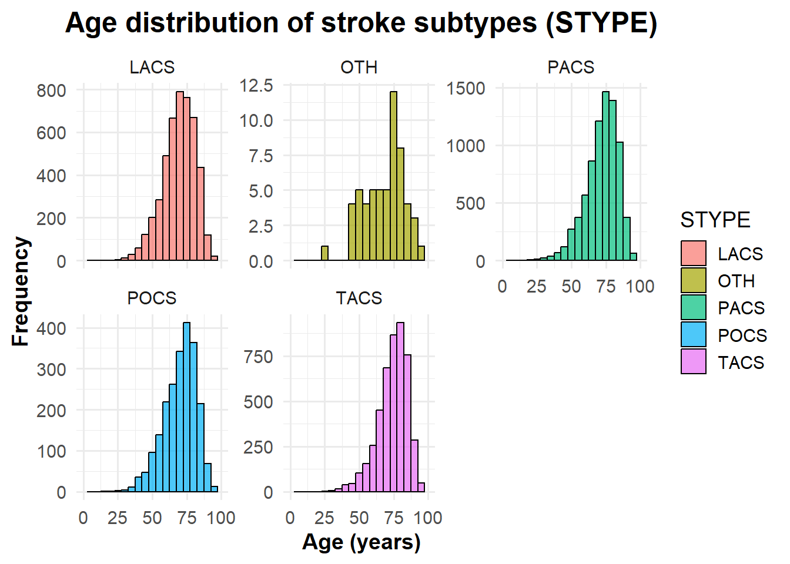
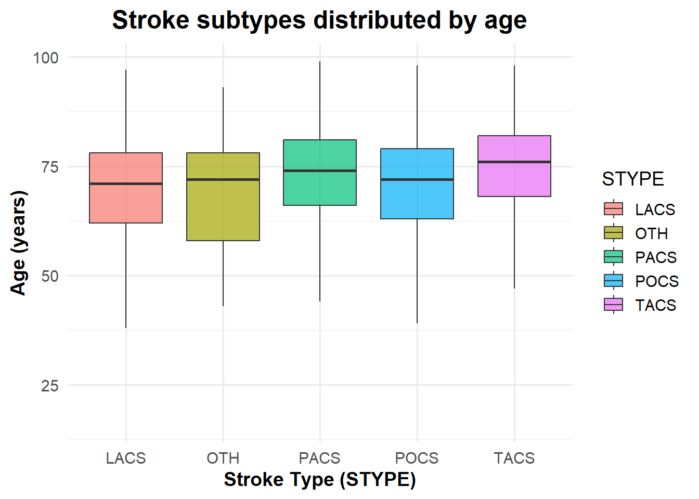
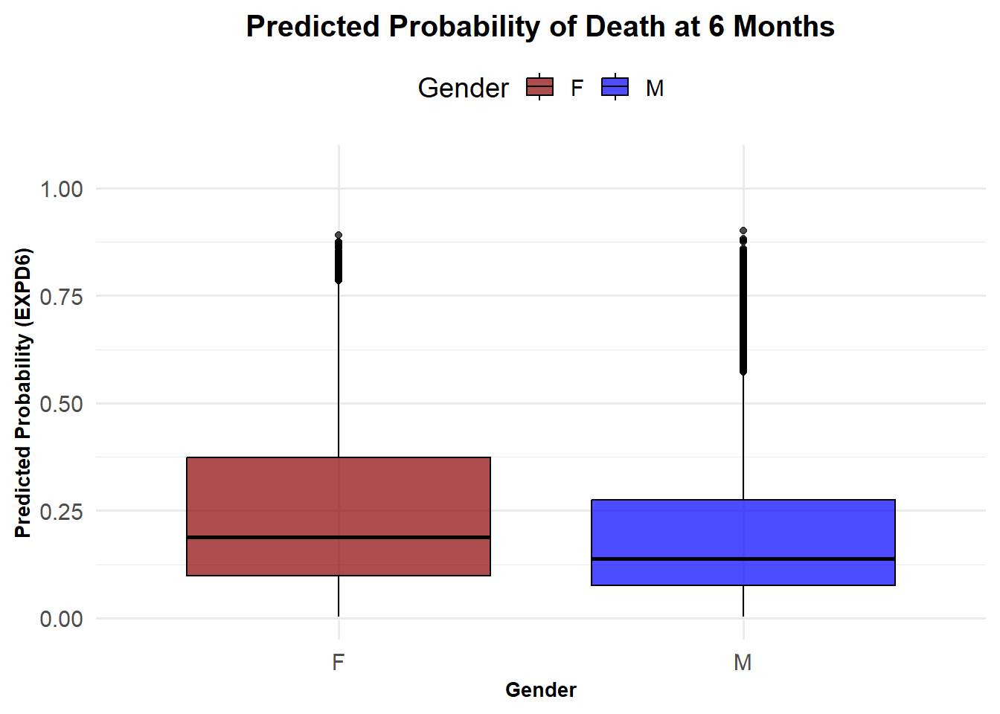
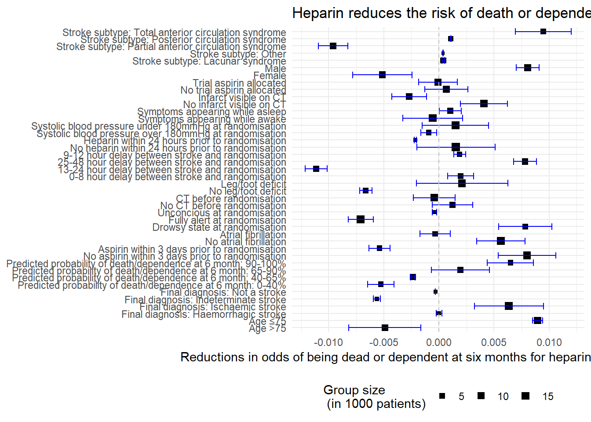

# Define the file pathfile_path <-"../data/_raw/"if (!file.exists(file_path)){dir.create(file_path, recursive =TRUE)}#Write the data to a TSV filewrite_tsv(x = raw_data, file =str_c(file_path, "01_dat_load.tsv"))
data <-read_tsv(here("data/_raw/01_dat_load.tsv"))
Data cleaning
Ensuring global use of Yes/No for binary variables, and NA if information is unknown (U/u/0)
During revision of the data, many faulty characters of “U” and “C” appear within columns, only meant for “Y” or “N”. The “U” and “C” are therefore changed to NA to indicate a missing value.
#converting U and C to NAdata_clean_properNA <- data |>#Replacing all C with NA to indicate missing valuemutate(across(where(is.character), ~na_if(.,"C"))) |>#Replace all U and u with NA in all columns except for RCONSC, where U = unconsciousmutate(RCONSC =if_else(RCONSC =="U", "unconscious", RCONSC)) |>mutate(across(where(is.character), ~na_if(.,"U")),across(where(is.character), ~na_if(.,"u"))) |>mutate(RCONSC =if_else(RCONSC =="unconscious", "U", RCONSC))
In the variable SET14D, a 0 is indicating that it is not known if the subject is alive or dead at the 14 day checkup. We therefore want to change the 0 to NA, indicating that this information is not known.
In column DASP14 and FAP, both “n” and “N” along with “y” and “Y” both indicating “No” and “Yes” respectively. To match the general syntax, all letters are made upper case.
#making y and n upper casedata_clean_propervar <- data_clean_properNA2 |>mutate(across(c(DASP14,FAP), ~str_to_upper(.)))
In the columns DVT14, H14, DDEAD, HTI14, ID14, ISC14, NCB14, NK14, PE14, TRAN14, values are 0 = no and 1 = yes, and to match the other binary variables they will therefore be transformed to N = no and Y = yes.
#converting 0 to N(no) and 1 to Y(yes)data_clean_propervar2 <- data_clean_propervar |>mutate(across(c(DVT14,H14,DDEAD,HTI14,ID14,ISC14,NCB14,NK14,PE14,TRAN14,STRK14), ~case_when( . ==0~"N", . ==1~"Y")))
Ensuring global syntax for numbers 1-8 naming cause of death
The numbers 1-8 is used for naming cause of death. Therefore OCCODE is renamed to the actual meanings of the numbers 0-9 to prevent confusion to number code in cause of death.
#changing values 0-9 for occode to their actual meaningdata_clean_properOCcode <- data_clean_propervar2 |>mutate(OCCODE =case_when( OCCODE %in%c(0,8,9) ~NA, OCCODE ==1~"dead", OCCODE ==2~"dependent", OCCODE ==3~"not recovered", OCCODE ==4~"recovered"))
Converting all time-values exceeding 59 min and 23 hours to NA
In the two columns minlocal and hourlocal the local time of the randomization study initiation is annotated. This value is not allowed to be higher than 59 min and 23 hours. All values above this is set to NA for missing values.
#replacing all values above 59 in minute and 23 hour with NAdata_clean_truetime <- data_clean_properOCcode |>mutate(MINLOCAL =if_else(MINLOCAL >59, NA, MINLOCAL),HOURLOCAL =if_else(HOURLOCAL >23, NA, HOURLOCAL))
Fixing errors made during data collection
For the pilot study, medium dose of heparin is annotated as high dose. The high dose annotation is changed to medium dose annotation, and the two columns for medium dose of pilot study and following study is merged.
#replacing all H for M for indicating medium dose (Heparin)data_clean_noH <- data_clean_truetime |>mutate(RXHEP =if_else(RXHEP =="H","M",RXHEP))#merging the Hep high and hep medium column, changing unknown to NAdata_clean_correctHepDose <- data_clean_noH |>mutate(across(c(DMH14,DHH14), ~replace_na(.,""))) |>unite(DMH14, c(DMH14,DHH14), sep ="") |>mutate(DMH14 =na_if(DMH14,"")) |>mutate(across(c(DMH14,DLH14), ~na_if(., "U")))
The variable STRK14 is annotated as STR14 in the data description, and the column is therefore renamed accordingly
#converting name of variable STRK14 to align with the variable descriptiondata_clean_annotationalign <- data_clean_correctHepDose |>rename("STR14"= STRK14)
In the RDATE variable, all times are annotated as polish months and year. We aim to convert this information in two columns, and reencode the polish to english months
Some columns is already known to not be relevant. These will therefore be removed to reduce the space of the column.
#removing of irrelevant columnsdata_clean_removecol <- data_clean_english |>#Removing comment columnsselect(-c(DMAJNCHX,DNOSTRKX,DSIDEX,DDEADX,FDEADX)) |>#Removing columns which are not interesting for our studiesselect(-c(HOSPNUM,CNTRYNUM,SET14D,NCCODE)) |>#Removing column which have unknown meaning as not included in variable descriptionsselect(-c(DIED))
Merging of columns
The columns DDEADD and FDEADD are the same, as the value is the date of death of the subject, which is independent of when the checkup is done. The columns are therefore renamed to DEADD (deathdate) and one of the columns are removed.
There are four different columns in the data which all represents the final diagnosis of the initial event. It is fair to assume that if one final diagnosis is made of an initial event then another diagnosis is not made, as there are no data entries which has “Y” in more than one of the diagnosis. One column, DDIAG, is therefore made to represent the final diagnosis of the initial event.
#mergin 4 columns into a new (DDIAG)data_clean_mergecol2 <- data_clean_mergecol |>mutate("DDIAG"=case_when( DDIAGISC =="Y"~"DDIAGISC", DDIAGHA =="Y"~"DDIAGHA", DDIAGUN =="Y"~"DDIAGUN", DNOSTRK =="Y"~"DNOSTRK",TRUE~NA))
The causes of death at 6 months are split into 8 different columns called DEAD1-8. To have more tidy data, all columns are merged together into one column, using the same 1-8 code for cause of death as DDEADC and FDEADC columns. The new column is called DEADC (death cause)
#creating of one column DEADC, which contains all causes of death as 1-8data_clean_properDEADcode <- data_clean_mergecol2 |>mutate(DEAD1 =if_else(DEAD1 ==1, "1", ""),DEAD2 =if_else(DEAD2 ==1, "2", ""),DEAD3 =if_else(DEAD3 ==1, "3", ""),DEAD4 =if_else(DEAD4 ==1, "4", ""),DEAD5 =if_else(DEAD5 ==1, "5", ""),DEAD6 =if_else(DEAD6 ==1, "6", ""),DEAD7 =if_else(DEAD7 ==1, "7", ""),DEAD8 =if_else(DEAD8 ==1, "8", "")) |>unite(DEADC, c(DEAD1,DEAD2,DEAD3,DEAD4,DEAD5,DEAD6,DEAD7,DEAD8), sep ="") |>mutate(DEADC =na_if(DEADC,""))
Splitting/joining data
Adding unique identifier (number) to each patient is done for the purpose of having a key to join the data after splitting. Creating a variable is normally thought of as data augmentation, but it is done in the cleaning for this purpose.
In order to be able to distinguish patients participating in the trial a Unique Subject Identifier USUBJID is added a variable number one in the cleaned dataset.
#adding a unique identifier (number) to each patientdata_clean_numbered<- data_clean_properDEADcode |>mutate(USUBJID =row_number()) |>select(USUBJID, everything())
It might be relevant to split data into multiple datasets. This is the case if we want to share some data with stakeholders while some variables contain information that is sensitive and need to remove from the dataset (e.g. GDPR reasons).
#splitting of dataset into 2data_split_1 <- data_clean_numbered |>select(1:50)data_split_2 <- data_clean_numbered |>select(1, 51:96)
#joining dataset by the key which we have createddata_inner_joined <- data_split_1 |>inner_join(data_split_2, by =join_by(USUBJID))
Another scenario might be that while the external stakeholder is working with their part of the dataset data_split_2, patients might have withdrawn from the study and rows have been removed in data_split_1. If we want to remove the same patients/observations during the join, left_join() will be used.
DLH14 describes if the subject had a low dose of heparin (Yes/No), DMH14 describes if the subject had a medium dose of heparin (Yes/No), given for 14 days or till death/discharge. We want to merge the two columns into one to improve tidyness, Introduce L for low, M for medium, C for control (no Heparin) and NA for no known information or conflicting information in the two columns.
This section explores the age distribution of the study population:
# Calculate the mean agemean_age <-mean(data$AGE, na.rm =TRUE)# Excluding missing or negative agesdata <- data |>filter(!is.na(AGE) & AGE >=0)# Visualizing the age distributionp1 <-ggplot(data, aes(x = AGE)) +geom_histogram(fill ="lightblue", color ="darkblue", bins =30, alpha =0.7) +labs(title ="Age Distribution of the Study Population", x ="Age (years)", y ="Number of People" ) +theme_minimal(base_size =14) +theme(plot.title =element_text(hjust =0.5, face ="bold", size =18), axis.title.x =element_text(face ="bold", size =14), axis.title.y =element_text(face ="bold", size =14), panel.grid.minor =element_blank() ) +scale_x_continuous(breaks =seq(0, 100, by =10), limits =c(0, 100)) +scale_y_continuous(expand =expansion(mult =c(0, 0.05)), breaks =seq(0, 3000, by =500)) +geom_segment(x = mean_age, xend = mean_age, y =0, yend =2900, color ="darkgreen", linetype ="dashed", size =1.0 ) +annotate("label", x = mean_age +12, y =2400, label =paste("Mean Age:", round(mean_age, 0), "years"), color ="white", fill ="darkgreen", fontface ="bold", size =4, label.padding =unit(0.4, "lines") # Mean age shown in a text box with padding )# Display the plotprint(p1)

From the histogram distributed by age, it can be seen that the mean age of the study population is 72 years.
Age distribution of stroke subtypes (STYPE)
The stroke subtypes (STYPE) are here distributed by age and visualized with boxplots. Here’s a brief description of the different subtypes:
LACS (Lacunar Stroke Syndrome)
Blockage of small penetrating arteries in deep brain structures, such as the basal ganglia, thalamus, or internal capsule. The prognosis is genereally better than other subtypes; smaller infarct size, where infarct size refers to the portion of the brain that has suffered irreversible damage from a stroke due to insufficient oxygen and nutrients.
PACS (Partial Anterior Circulation Syndrome)
Partial occlusion in the anterior cerebral circulation, typically affecting the middle cerebral artery (MCA) or anterior cerebral artery (ACA). The prognosis is moderate; larger infarct than LACS, but less severe than e.g TACS.
POCS (Posterior Circulation Syndrome)
Infarction in the posterior cerebral circulation, affecting the brainstem, cerebellum, or occipital lobes. The prognosis is variable, depending on location and size of the infarction.
TACS (Total Anterior Circulation Syndrome)
Complete occlusion of the anterior cerebral circulation, typically affecting the middle cerebral artery (MCA) or internal carotid artery (ICA). The prognosis is poor; associated with large infarcts, severe disability, and high mortality rates.
OTH refers to other types of strokes.
p2 <- data |>ggplot(aes(x = STYPE, y = AGE, fill = STYPE)) +geom_boxplot(alpha =0.7, outlier.shape =NA) +# Boxplot without outlier pointslabs(title ="Stroke Subtypes Distributed by Age",x ="Stroke Type (STYPE)",y ="Age (years)" ) +theme_minimal(base_size =14) +theme(plot.title =element_text(hjust =0.5, face ="bold", size =18),axis.title.x =element_text(face ="bold", size =14),axis.title.y =element_text(face ="bold", size =14),legend.position ="right" )# Display the plotprint(p2)

STYPE_median <- data |>group_by(STYPE) |>summarize(Median_AGE =round(median(AGE, na.rm =TRUE), 0))print(STYPE_median)
The median age of the different stroke subtypes are shown, where the most severe subtype TACS with high mortality rates, has the highest median age of 76 years.
Data visualization
The study population has been divided into six data groups based on the dose of heparin (no, low, medium) and whether aspirin was located. Below is a summary of the number of patients in each test group:
# Summarize and count patients by data groupdata_summary <- data |>group_by(data_group) |>count(name ="patient_count") print(data_summary)
Predicted probability of death by gender at 6 months
This section visualizes the predicted probability of death at six months (EXPD6) by gender. A boxplot is used to compare probabilities.
# Create boxplot for predicted probability of death by genderp3 <- data |>ggplot(aes(x = SEX, y = EXPD6, fill = SEX)) +geom_boxplot(alpha =0.7, color ="black") +scale_fill_manual(values =c("darkred", "blue")) +labs(title ="Predicted Probability of Death at 6 Months", x ="Gender", y ="Predicted Probability (EXPD6)", fill ="Gender" ) +theme_minimal(base_size =14) +theme(plot.title =element_text(hjust =0.5, face ="bold", size =15),axis.title.x =element_text(face ="bold", size =10), axis.title.y =element_text(face ="bold", size =10), legend.position ="top" ) +scale_y_continuous(limits =c(0, 1), expand =expansion(mult =c(0.05, 0.1)) )# Display the plotprint(p3)

Comparison of median of EXPD6 by gender
The following table summarizes the median predicted probability of death (EXPD6) by gender.
#Show median EXPD6 by gender median_table <- data |>group_by(SEX) |>summarize(Median_EXPD6 =median(EXPD6, na.rm =TRUE)) print(median_table)
# A tibble: 2 × 2
SEX Median_EXPD6
<chr> <dbl>
1 F 0.189
2 M 0.139
From the table, females have a higher median probability of death at 6 months (0.1888) compared to males (0.1390).
We want to investigate the apparent beneficial effect of the treatment by aspirin and heparin, divided into the different subgroups of the data. We will do that with inspiration from figure 2 in the original paper.
Loading libraries
library("tidyverse")library("here")
Loading data
The augmented data will be loaded, but further processing of the data will be needed.
data <-read_tsv(here("data/03_dat_aug.tsv"))
Heparin vs. Control Subgroup Analysis
Data augmentation - Creating the desired subgroups
The data is preprocessed to have the groups which are also visible in figure 2 in the original paper.
data_slim_heparin <- data |>#One result heparin column is created to group the low and medium doses of heparin together (as done in the original paper)mutate("Heparin"=case_when( RXHEP =='L'~'Y', RXHEP =='M'~'Y', RXHEP =='N'~'N',is.na(RXHEP) ~NA)) |>#The outcomes are gruped in dead/dependent and independent (as done in the original paper)mutate("Outcome"=case_when( OCCODE =="dead"~"dead/dependent", OCCODE =="dependent"~"dead/dependent", OCCODE =="not recovered"~"independent", OCCODE =="recovered"~"independent",is.na(OCCODE) ~NA )) |>#The delay from stroke to randomization is grouped into 4 subgroupsmutate("RDELAY_group"=case_when( RDELAY <=8~"0-8h", RDELAY <=12~"9-12h", RDELAY <=24~"13-24h", RDELAY <=48~"25-48h",TRUE~NA)) |>#The age is divided into two groups divided by 75 yearsmutate("AGE_group"=case_when( AGE <=75~"≤75", AGE >75~">75" )) |>#The systolic blood pressure above 180 is subdivided into a group as this is defined as hypertensive crisismutate("RSBP_group"=case_when( RSBP <=180~"≤180", RSBP >180~">180")) |>#The expected death after 6 months is subdivded into 4 groupsmutate("EXPDD_group"=case_when( EXPDD <=0.4~"0-40%", EXPDD <=0.65~"40-65%", EXPDD <=0.90~"65-90%", EXPDD <=1~"90-100%")) |>#Only the columns containing the subgroups interesting for this study is selectedselect(Heparin,Outcome,RXASP,RDELAY_group,SEX,AGE_group,RSLEEP,RCONSC,RATRIAL,RSBP_group,STYPE,RDEF3,RCT,RVISINF,DDIAG,RASP3,RHEP24,EXPDD_group)
Data augmentation - Calculating the statistics used in the plot
The data is modified to have one dataframe for each subgroup nested together in the same dataframe, where the original dataframe has the noted group and subgroup. Thereby there is one dataframe indicating for the individuals with and without heparin, what the outcomes is after 6 months.
data_nested_heparin <- data_slim_heparin |>#All the different data subgroups are pivoted into one columnpivot_longer(cols =-c(Heparin,Outcome), names_to ="group", values_to ="subgroup") |>drop_na() |>#The data is grouped by the different subgroups and it is counted how many there are for each group and outcomegroup_by(Heparin,Outcome,group,subgroup) |>count() |>mutate(n = n/1000) |>#The data is nested into each subgroupgroup_by(group,subgroup) |>nest() |>ungroup()
full_labels_heparin <-c("AGE_group_>75"="Age >75", "AGE_group_≤75"="Age ≤75","DDIAG_DDIAGHA"="Final diagnosis: Haemorrhagic stroke","DDIAG_DDIAGISC"="Final diagnosis: Ischaemic stroke","DDIAG_DDIAGUN"="Final diagnosis: Indeterminate stroke","DDIAG_DNOSTRK"="Final diagnosis: Not a stroke","EXPDD_group_0-40%"="Predicted probability of death/dependence at 6 month: 0-40%","EXPDD_group_40-65%"="Predicted probability of death/dependence at 6 month: 40-65%","EXPDD_group_65-90%"="Predicted probability of death/dependence at 6 month: 65-90%","EXPDD_group_90-100%"="Predicted probability of death/dependence at 6 month: 90-100%","RASP3_N"="No aspirin within 3 days prior to randomisation","RASP3_Y"="Aspirin within 3 days prior to randomisation","RHEP24_N"="No heparin within 24 hours prior to randomisation","RHEP24_Y"="Heparin within 24 hours prior to randomisation","RATRIAL_N"="No atrial fibrillation","RATRIAL_Y"="Atrial fibrillation","RCONSC_D"="Drowsy state at randomisation","RCONSC_F"="Fully alert at randomisation","RCONSC_U"="Unconcious at randomisation","RCT_N"="No CT before randomisation","RCT_Y"="CT before randomisation","RDEF3_N"="No leg/foot deficit","RDEF3_Y"="Leg/foot deficit","RDELAY_group_0-8h"="0-8 hour delay between stroke and randomisation","RDELAY_group_9-12h"="9-12 hour delay between stroke and randomisation","RDELAY_group_13-24h"="13-24 hour delay between stroke and randomisation","RDELAY_group_25-48h"="25-48 hour delay between stroke and randomisation","RSBP_group_≤180"="Systolic blood pressure under 180mmHg at randomisation","RSBP_group_>180"="Systolic blood pressure over 180mmHg at randomisation","RSLEEP_N"="Symptoms appearing while awake","RSLEEP_Y"="Symptoms appearing while asleep","RVISINF_N"="No infarct visible on CT","RVISINF_Y"="Infarct visible on CT","RXASP_N"="No trial aspirin allocated","RXASP_Y"="Trial aspirin allocated","SEX_F"="Female","SEX_M"="Male","STYPE_LACS"="Stroke subtype: Lacunar syndrome","STYPE_PACS"="Stroke subtype: Partial anterior circulation syndrome","STYPE_POCS"="Stroke subtype: Posterior circulation syndrome","STYPE_TACS"="Stroke subtype: Total anterior circulation syndrome","STYPE_OTH"="Stroke subtype: Other" )data_CI_ordered_heparin <- data_CI_heparin |>mutate(group_name =factor(group_name,levels =c("EXPDD_group_90-100%","EXPDD_group_65-90%","EXPDD_group_40-65%","EXPDD_group_0-40%","DDIAG_DNOSTRK","DDIAG_DDIAGUN","DDIAG_DDIAGISC","DDIAG_DDIAGHA","RDEF3_Y","RDEF3_N","RSLEEP_Y","RSLEEP_N","RCONSC_U","RCONSC_F","RCONSC_D","RDELAY_group_25-48h","RDELAY_group_13-24h","RDELAY_group_9-12h","RDELAY_group_0-8h","STYPE_OTH","STYPE_TACS","STYPE_POCS","STYPE_PACS","STYPE_LACS","RATRIAL_Y","RATRIAL_N","RVISINF_Y","RVISINF_N","RCT_Y","RCT_N","RHEP24_Y","RHEP24_N","RASP3_Y","RASP3_N","RSBP_group_>180","RSBP_group_≤180","RXASP_Y","RXASP_N","SEX_M","SEX_F","AGE_group_≤75","AGE_group_>75"), ordered =TRUE))
The plot is created similarly to the figure 2 in the data
p1 <- data_CI_heparin |>ggplot(aes(x = Ad_ben,y = group_name,xmin = CI_lower,xmax = CI_upper))+geom_point(aes(size = Total_patients),shape =15)+geom_errorbarh(color ="blue")+geom_vline(xintercept =0, color ="grey", linetype =2)+scale_y_discrete(labels = full_labels_heparin)+scale_size_continuous(range =c(1,3))+labs(title ="Heparin reduces the risk of death or dependence after 6 months for only a few subgroups",x ="Reductions in odds of being dead or dependent at six months for heparin versus no heparin",size ="Group size \n (in 1000 patients)")+theme_minimal()+theme(axis.title.y =element_blank(),legend.position ="bottom")p1

Aspirin vs. Control Subgroup Analysis
Data augmentation - Creating the desired subgroups
full_labels_aspirin <-c("AGE_group_>75"="Age >75", "AGE_group_≤75"="Age ≤75","DDIAG_DDIAGHA"="Final diagnosis: Haemorrhagic stroke","DDIAG_DDIAGISC"="Final diagnosis: Ischaemic stroke","DDIAG_DDIAGUN"="Final diagnosis: Indeterminate stroke","DDIAG_DNOSTRK"="Final diagnosis: Not a stroke","EXPDD_group_0-40%"="Predicted probability of death/dependence at 6 month: 0-40%","EXPDD_group_40-65%"="Predicted probability of death/dependence at 6 month: 40-65%","EXPDD_group_65-90%"="Predicted probability of death/dependence at 6 month: 65-90%","EXPDD_group_90-100%"="Predicted probability of death/dependence at 6 month: 90-100%","RASP3_N"="No aspirin within 3 days prior to randomisation","RASP3_Y"="Aspirin within 3 days prior to randomisation","RHEP24_N"="No heparin within 24 hours prior to randomisation","RHEP24_Y"="Heparin within 24 hours prior to randomisation","RATRIAL_N"="No atrial fibrillation","RATRIAL_Y"="Atrial fibrillation","RCONSC_D"="Drowsy state at randomisation","RCONSC_F"="Fully alert at randomisation","RCONSC_U"="Unconcious at randomisation","RCT_N"="No CT before randomisation","RCT_Y"="CT before randomisation","RDEF3_N"="No leg/foot deficit","RDEF3_Y"="Leg/foot deficit","RDELAY_group_0-8h"="0-8 hour delay between stroke and randomisation","RDELAY_group_9-12h"="9-12 hour delay between stroke and randomisation","RDELAY_group_13-24h"="13-24 hour delay between stroke and randomisation","RDELAY_group_25-48h"="25-48 hour delay between stroke and randomisation","RSBP_group_≤180"="Systolic blood pressure under 180mmHg at randomisation","RSBP_group_>180"="Systolic blood pressure over 180mmHg at randomisation","RSLEEP_N"="Symptoms appearing while awake","RSLEEP_Y"="Symptoms appearing while asleep","RVISINF_N"="No infarct visible on CT","RVISINF_Y"="Infarct visible on CT","RXHEP_N"="No trial heparin allocated","RXHEP_L"="Trial heparin low dose allocated","RXHEP_M"="Trial heparin medium allocated","SEX_F"="Female","SEX_M"="Male","STYPE_LACS"="Stroke subtype: Lacunar syndrome","STYPE_PACS"="Stroke subtype: Partial anterior circulation syndrome","STYPE_POCS"="Stroke subtype: Posterior circulation syndrome","STYPE_TACS"="Stroke subtype: Total anterior circulation syndrome","STYPE_OTH"="Stroke subtype: Other")data_CI_ordered_aspirin <- data_CI_aspirin |>mutate(group_name =factor(group_name,levels =c("EXPDD_group_90-100%","EXPDD_group_65-90%","EXPDD_group_40-65%","EXPDD_group_0-40%","DDIAG_DNOSTRK","DDIAG_DDIAGUN","DDIAG_DDIAGISC","DDIAG_DDIAGHA","RDEF3_Y","RDEF3_N","RSLEEP_Y","RSLEEP_N","RCONSC_U","RCONSC_F","RCONSC_D","RDELAY_group_25-48h","RDELAY_group_13-24h","RDELAY_group_9-12h","RDELAY_group_0-8h","STYPE_OTH","STYPE_TACS","STYPE_POCS","STYPE_PACS","STYPE_LACS","RATRIAL_Y","RATRIAL_N","RVISINF_Y","RVISINF_N","RCT_Y","RCT_N","RHEP24_Y","RHEP24_N","RASP3_Y","RASP3_N","RSBP_group_>180","RSBP_group_≤180","RXHEP_M","RXHEP_L","RXHEP_N","SEX_M","SEX_F","AGE_group_≤75","AGE_group_>75"), ordered =TRUE))
The plot is created similarly to the figure 2 in the data
p2 <- data_CI_ordered_aspirin |>ggplot(aes(x = Ad_ben,y = group_name,xmin = CI_lower,xmax = CI_upper))+geom_point(aes(size = Total_patients),shape =15)+geom_errorbarh(color ="blue")+geom_vline(xintercept =0, color ="grey", linetype =2)+scale_y_discrete(labels = full_labels_aspirin)+scale_size_continuous(range =c(1,3))+labs(title ="Aspirin reduces the risk of death or dependence after 6 months for many subgroups",x ="Reductions in odds of being dead or dependent at six months for aspirin versus no aspirin",size ="Group size \n (in 1000 patients)")+theme_minimal()+theme(axis.title.y =element_blank(),legend.position ="bottom")+annotate("text", x=-0.04, y="AGE_group_>75", label="Aspirin better") +annotate("text", x =0.04, y="AGE_group_>75", label ="Aspirin worse")p2
Examining which effect combinations of treatments affects the probability of side events. The code can be used to create improved versions of figure 5A, 5B and 5D from the report that the data originates from. The effects are illustrated with bar plots.
Since several different effects will be examined, the code for creating the barplot is encoded in a function. First, a the data set is changed to contain only the rows investigated: dose op heparin, dose of heparin and whether the effect has been reported. Secondly, a new data set is created, calculating what percentage of patients are experiencing that effect. Thirdly, the plot is created: different heparin doses are on the x-axis, the treatment with aspirin is indicated by coloring and the y-axis is the percentage of patients with the effect reported.
bar_func <-function(group_title,data,colvar){#Removing patients that do not fulfill the requirement for investigation relevant_data <- data |>select(RXHEP, RXASP, {{colvar}})#Creating a data set with a column counting the percentage of patients with reported effect percentage_data <- relevant_data |>#Counts the patients in each groupgroup_by_all() |>count() |>#Creates the six groups examinedgroup_by(RXHEP, RXASP) |>#Creates a row with percentages for use in plotmutate(total_in_group =sum(n),percentage = n / total_in_group *100,#Calculating standard deviationsp = n / total_in_group,se =sqrt(p * (1- p) / total_in_group) *100) |>filter({{colvar}} !="N")#Create the order of doses of medicine, so they have the correct order in the plot sorted_data <- percentage_data |>mutate(RXHEP =factor(RXHEP, levels =c("M", "L", "N")),RXASP =factor(RXASP, levels =c("Y", "N")))#Defining the plot plot_bar <- sorted_data |>ggplot(mapping =aes(x = RXHEP, #Stratisfy on dose of hepariny = percentage, #Expresses the chance of the event happening fill = RXASP, #Color by the dose of aspirinymin = percentage - se, #Defines minimum for error barsymax = percentage + se)) +#Defines maximum for error bars#Creates the columns - position_dodge-argument makes one column for each groupgeom_col(position =position_dodge(preserve ="single"), alpha =0.7,color ="black") +#Creates text for data geom_text(aes(label =round(percentage, 2),y = percentage /2),#Makes text centered in bars and correct sizesposition =position_dodge(width =0.9),vjust =0.5,size =4) +#Adds errorbarsgeom_errorbar(position =position_dodge(width =0.9),width =0.3) +#Create labels labs(title =str_c("Percentage of patients with ", group_title),x =NULL,y ="%",fill ="Aspirin Dosing") +scale_fill_brewer(palette ="Dark2",labels =c("Y"="300 mg daily","N"="No Aspirin")) +theme_minimal() +#Chooses a design (removes grey background)theme(legend.position ="bottom",axis.title.y =element_text(angle =0, vjust =0.5), #Adjust y-axis tetpanel.grid.major.x =element_blank()) +#Adjusting horizontal lines#Edits labels for the X-axisscale_x_discrete(labels =c("M"="12500 IU Heparin","L"="5000 IU Heparin","N"="No Heparin"))#Defines final output of function to be the plotreturn(plot_bar)}
Loading Data
data <-read_tsv(here("data/03_dat_aug.tsv"))
Creating bar plots
In the code below, a plot illustrating the percentage of patients in each group with cerebral bleed/heamorrhagic stroke within 14 days.
p1 <-bar_func("cerebral bleed/heamorrhagic stroke within 14 days",data,H14)p1
Here, the plot illustrates the percentage of patients in each group with major non-cerebral bleed within 14 days.
p2 <-bar_func("indicator of major non-cerebral bleed within 14 days",data,TRAN14)p2
Finally, a plot illustrating the percentage of patients with reported pulmonary embolism within 14 days are created. This effect has a possibility of substantial under-reporting.
p3 <-bar_func("indicator of pulmonary embolism within 14 days",data,PE14)p3
A Kaplan-Meier curve is a curve illustrating the overall survival rate for each group over time. We can plot it for 0-6 months after randomization. We can use this to see if there is an overall difference in survival for the treatments over time. For this we need a time-of-death (if one) and group value for each subject.
A Chi-squared test is a statistical test to see of there is a significant difference in group sizes. The null-hypothesis would be that for all types of treatments, there is the same fraction of people which has died or are dependent after 6 months.
p1 <- km_tidy|>mutate(strata =str_remove(strata,"data_group=")) |>ggplot(mapping =aes(x = time, y = estimate, color = strata)) +# `strata` is the name of the groups from the km modelgeom_step(linewidth =1) +# Kaplan-Meier stepsgeom_ribbon(aes(ymin = conf.low, ymax = conf.high), alpha =0.1, linetype ="dashed") +# Confidence intervallabs(title ="Kaplan-Meier Survival curve",x ="Time (days)",y ="Probability of survival",color ="Treatment group")+scale_color_brewer(palette="Dark2")+theme_minimal()
# Plot tiles where color correspond to the pvaluesp2 <- chi_sqr_test |>ggplot(mapping =aes(x = data_group...1,y = data_group...2,fill = chisqr_pval))+geom_tile()+scale_fill_gradient2(low ="#1B9E77",mid ="white",high ="#7570B3",midpoint =0.05)+theme_minimal()+theme(axis.title =element_blank(),axis.text.x =element_text(angle =45, vjust =1, hjust =1))